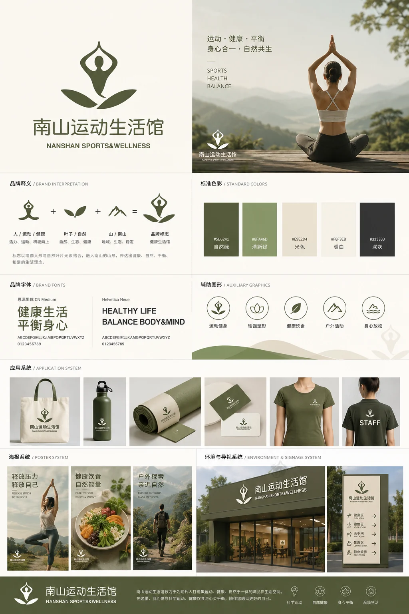

← 返回所有作品 BACK TO ALL WORKS02 / 17
视觉设计 · 平面设计 · 落地项目 / 2023—2025
已落地
南山运动生活馆
NANSHAN SPORTS & WELLNESS
以运动、平衡与自然共生，建立舒展的健康生活品牌印象。

01 / OVERVIEW
以运动、平衡与自然共生，建立舒展的健康生活品牌印象。
品牌使用瑜伽姿态、叶片和山形元素表达运动、健康、平衡和自然共生，形成轻松、自然、舒展的视觉印象，并延展至标准色、辅助图形与周边应用。
- 年份 / YEAR
- 2023—2025
- 类型 / TYPE
- 视觉设计 · 平面设计 · 落地项目
- 工具 / TOOLS
- Illustrator / Photoshop / Brand System
- 角色 / ROLE
- 独立设计 / INDEPENDENT
02 / PROCESS + OUTPUT
01 IMAGES